面试
缓存问题¶
缓存一致性（双写一致性）¶
缓存的通用模型有三种：
Cache Aside（常用）：由缓存调用者自己维护数据库与缓存的一致性。- 查询时：命中则直接返回，未命中则查询数据库并写入缓存
- 更新时：更新数据库并删除缓存
Read/Write Through：数据库自己维护一份缓存，底层实现对调用者透明。- 查询时：命中则直接返回，未命中则查询数据库并写入缓存
- 更新时：判断缓存是否存在，不存在直接更新数据库。存在则更新缓存，同步更新数据库
Write Behind Cahing：读写操作都直接操作缓存，由线程异步地将缓存数据同步到数据库
Cache Aside的写操作是要在更新数据库的同时删除缓存
那到底是先更新数据库再删除缓存，还是先删除缓存再更新数据库呢？
假设有两个线程，一个更新数据，一个查询数据
- 先更新数据库再删除缓存
正常情况
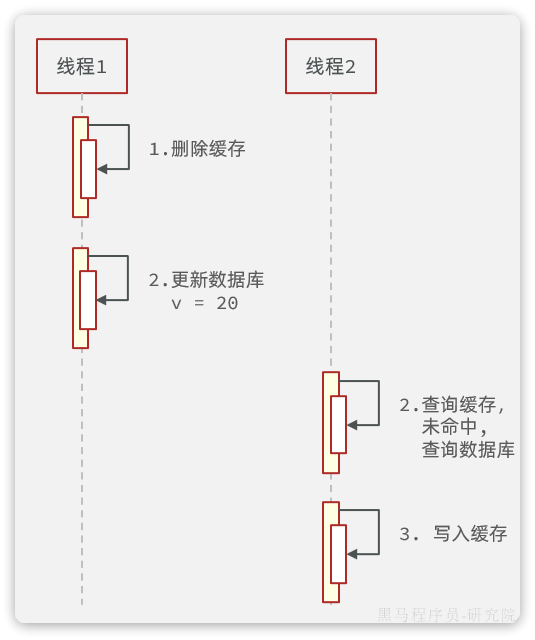
异常情况
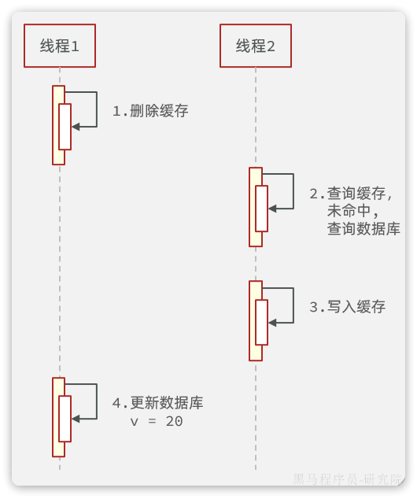
由于更新数据库的操作本身比较耗时，在期间有线程来查询数据库并更新缓存的概率非常高。因此不推荐这种方案。
- 先更新数据库再删除缓存
正常情况
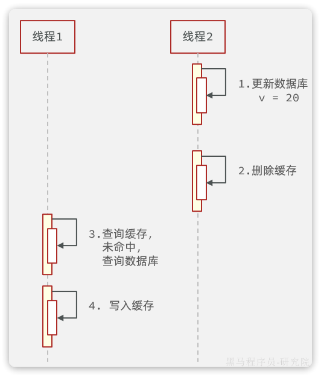
异常情况
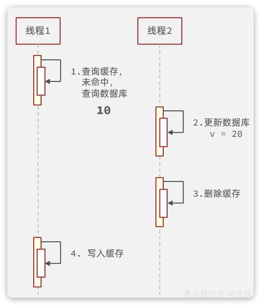
异常概率较低，线程1必须是查询数据库已经完成，但是缓存尚未写入之前。线程2要完成更新数据库同时删除缓存的两个操作。
还有一种方式是延时双删，即在更新数据库后，先删除缓存，然后再延迟一段时间后再删除一次缓存。这样可以降低缓存不一致的概率。
缓存穿透¶
如果访问一个数据库中不存在的数据，那么缓存中肯定也不存在。因此不管请求该数据多少次，缓存永远不可能建立，请求永远会直达数据库。
假如有不怀好意的人，开启很多线程频繁的访问一个数据库中也不存在的数据。由于缓存不可能生效，那么所有的请求都访问数据库，可能就会导致数据库因过高的压力而宕机。
解决这个问题有两种思路：
-
缓存空对象
- 优点：实现简单，维护方便
- 缺点：
- 额外的内存消耗
- 可能造成短期的不一致
-
布隆过滤
- 优点：内存占用较少，没有多余key
- 缺点：
- 实现复杂
- 存在误判可能

缓存雪崩¶
缓存雪崩是指在同一时段大量的缓存key同时失效或者Redis服务宕机，导致大量请求到达数据库，带来巨大压力。
常见的解决方案有：
- 给不同的Key的TTL添加随机值，这样KEY的过期时间不同，不会大量KEY同时过期
- 利用Redis集群提高服务的可用性，避免缓存服务宕机
- 给缓存业务添加降级限流策略
- 给业务添加多级缓存，比如先查询本地缓存，本地缓存未命中再查询Redis，Redis未命中再查询数据库。即便Redis宕机，也还有本地缓存可以抗压力
缓存击穿¶
缓存击穿问题也叫热点Key问题，就是一个被高并发访问并且缓存重建业务较复杂的key突然失效了，无数的请求访问会在瞬间给数据库带来巨大的冲击。
常见的解决方案有两种：
- 互斥锁：给重建缓存逻辑加锁，避免多线程同时指向
- 逻辑过期：热点key不要设置过期时间，在活动结束后手动删除。
基于互斥锁的方案如图：
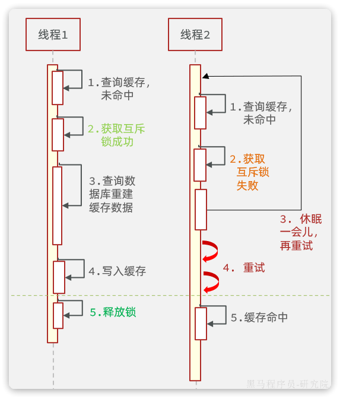
逻辑过期的思路如图：
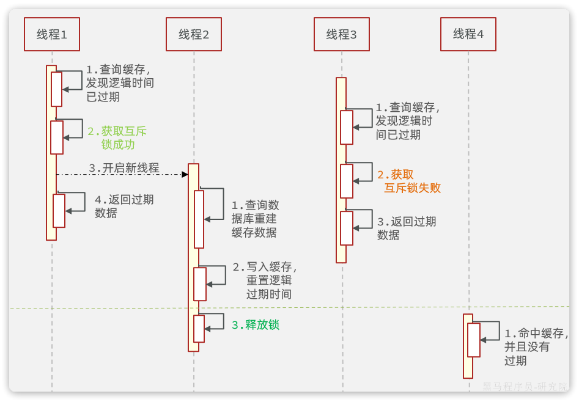
微服务¶
分布式事务¶
CAP定理和BASE理论¶
1.CAP定理
1998年，加州大学的计算机科学家 Eric Brewer 提出，分布式系统有三个指标：
- Consistency（一致性）
- Availability（可用性）
- Partition tolerance （分区容错性）
Tip
它们的第一个字母分别是 C、A、P。Eric Brewer认为任何分布式系统架构方案都不可能同时满足这3个目标，这个结论就叫做 CAP 定理。
Info
Consistency（一致性）：用户访问分布式系统中的任意节点，得到的数据必须一致。
Availability（可用性）：用户访问分布式系统时，读或写操作总能成功。
Partition（分区）：当分布式系统节点之间出现网络故障导致节点之间无法通信的情况。
Tolerance（容错）：即便是系统出现网络分区，整个系统也要持续对外提供服务。
2.BASE理论
- Basically Available （基本可用）：分布式系统在出现故障时，允许损失部分可用性，即保证核心可用。
- Soft State（软状态）：在一定时间内，允许出现中间状态，比如临时的不一致状态。
- Eventually Consistent（最终一致性）：虽然无法保证强一致性，但是在软状态结束后，最终达到数据一致。
以上就是BASE理论。
简单来说，BASE理论就是一种取舍的方案，不再追求完美，而是最终达成目标。因此解决分布式事务的思想也是这样，有两个方向：
- AP思想：各个子事务分别执行和提交，无需锁定数据。允许出现结果不一致，然后采用弥补措施恢复，实现最终一致即可。例如
AT模式就是如此 - CP思想：各个子事务执行后不要提交，而是等待彼此结果，然后同时提交或回滚。在这个过程中锁定资源，不允许其它人访问，数据处于不可用状态，但能保证一致性。例如
XA模式
AT模式的脏写问题¶
多线程并发访问AT模式的分布式事务时，有可能出现脏写问题，如图：
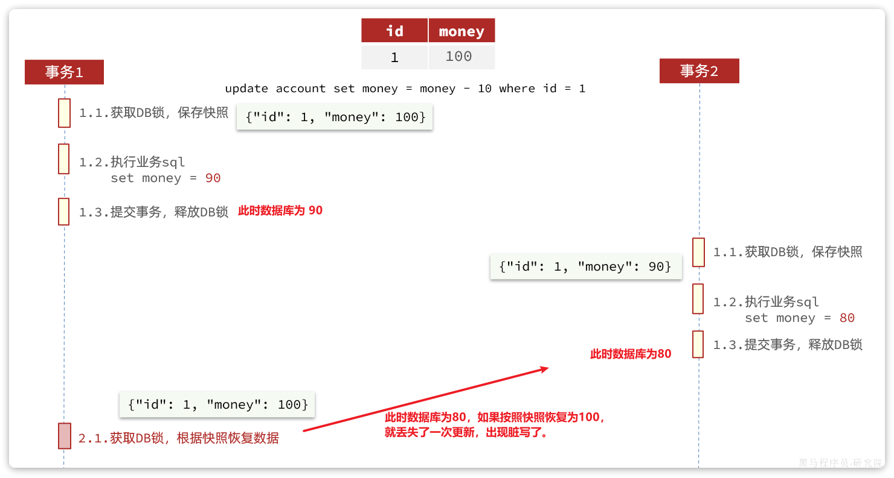
解决思路就是引入了全局锁的概念。在释放DB锁之前，先拿到全局锁。避免同一时刻有另外一个事务来操作当前数据。
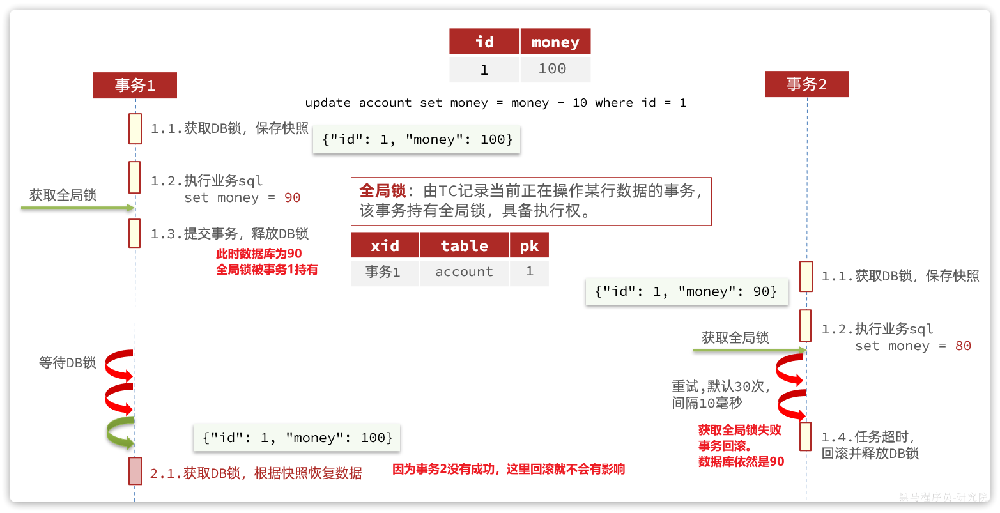
TCC模式¶
TCC模式与AT模式非常相似，每阶段都是独立事务，不同的是TCC通过人工编码来实现数据恢复。需要实现三个方法：
try：资源的检测和预留；confirm：完成资源操作业务；要求try成功confirm一定要能成功。cancel：预留资源释放，可以理解为try的反向操作。
举例，一个扣减用户余额的业务。假设账户A原来余额是100，需要余额扣减30元。
阶段一（ Try ）：检查余额是否充足，如果充足则冻结金额增加30元，可用余额扣除30
初始余额：

余额充足，可以冻结：
此时，总金额 = 冻结金额 + 可用金额，数量依然是100不变。事务直接提交无需等待其它事务。
阶段二（Confirm)：假如要提交（Confirm），之前可用金额已经扣减，并转移到冻结金额。因此可用金额不变，直接冻结金额扣减30即可：
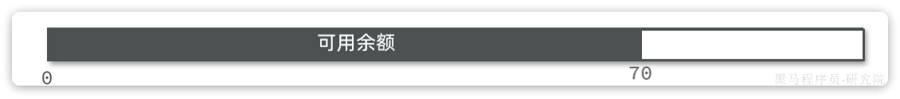
此时，总金额 = 冻结金额 + 可用金额 = 0 + 70 = 70元
阶段二(Canncel)：如果要回滚（Cancel），则释放之前冻结的金额，也就是冻结金额扣减30，可用余额增加30
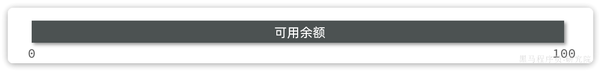
TCC的优点是什么？
- 一阶段完成直接提交事务，释放数据库资源，性能好
- 相比AT模型，无需生成快照，无需使用全局锁，性能最强
- 不依赖数据库事务，而是依赖补偿操作，可以用于非事务型数据库
TCC的缺点是什么？
- 有代码侵入，需要人为编写try、Confirm和Cancel接口，太麻烦
- 软状态，事务是最终一致
- 需要考虑Confirm和Cancel的失败情况，做好幂等处理、事务悬挂和空回滚处理
最大努力通知¶
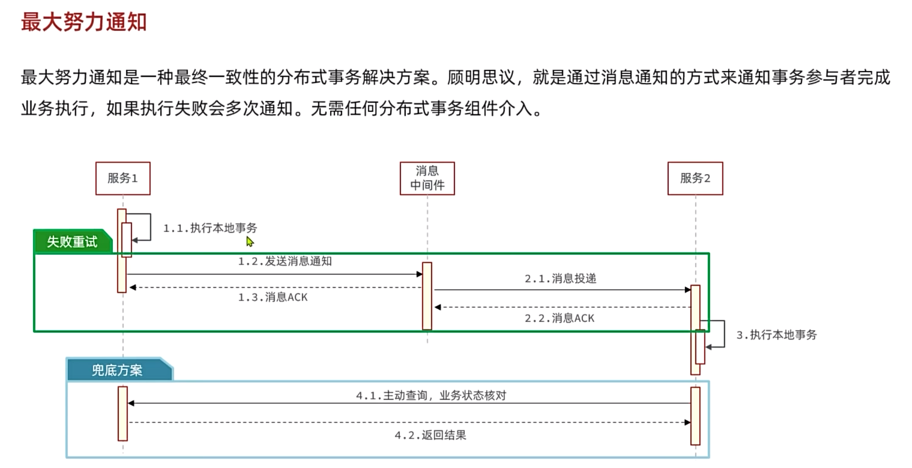
注册中心¶
环境隔离¶
企业实际开发中，往往会搭建多个运行环境，例如：
- 开发环境
- 测试环境
- 预发布环境
- 生产环境
这些不同环境之间的服务和数据之间需要隔离。
还有的企业中，会开发多个项目，共享nacos集群。此时，这些项目之间也需要把服务和数据隔离。
因此，Nacos提供了基于namespace的环境隔离功能。具体的隔离层次如图所示：
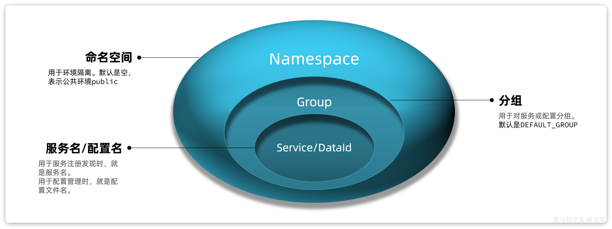
说明：
- Nacos中可以配置多个
namespace，相互之间完全隔离。默认的namespace名为public namespace下还可以继续分组，也就是group ，相互隔离。 默认的group是DEFAULT_GROUPgroup之下就是服务和配置了
指定命名空间：
spring:
application:
name: item-service # 服务名称
profiles:
active: dev
cloud:
nacos:
server-addr: localhost # nacos地址
discovery: # 服务发现配置
namespace: 8c468c63-b650-48da-a632-311c75e6d235 # 设置namespace，必须用id
分级模型¶
在一些大型应用中，同一个服务可以部署很多实例。而这些实例可能分布在全国各地的不同机房。由于存在地域差异，网络传输的速度会有很大不同，因此在做服务治理时需要区分不同机房的实例。
Nacos中提供了集群（cluster）的概念，来对应不同机房。也就是说，一个服务（service）下可以有很多集群（cluster），而一个集群（cluster）中下又可以包含很多实例（instance）。
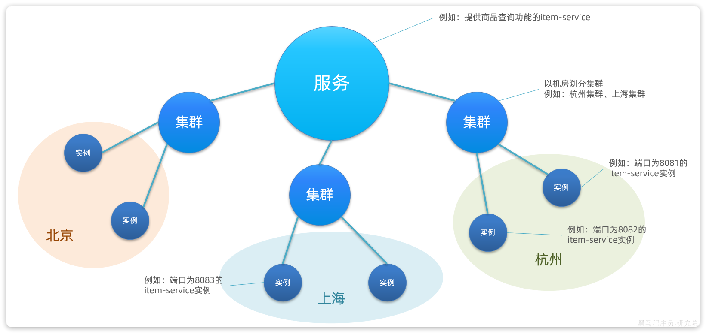
任何一个微服务的实例在注册到Nacos时，都会生成以下几个信息，用来确认当前实例的身份，从外到内依次是：
- namespace：命名空间
- group：分组
- service：服务名
- cluster：集群
- instance：实例，包含ip和端口
这就是nacos中的服务分级模型。
如果我们要修改服务所在集群，只需要修改bootstrap.yml即可：
spring:
cloud:
nacos:
discovery:
cluster-name: BJ # 集群名称，自定义
Eureka与Nacos¶
Eureka是Netflix公司开源的一个服务注册中心组件，早期版本的SpringCloud都是使用Eureka作为注册中心。由于Eureka和Nacos的starter中提供的功能都是基于SpringCloudCommon规范，因此两者使用起来差别不大。
Eureka和Nacos的相似点有：
- 都支持服务注册发现功能
- 都有基于心跳的健康监测功能
- 都支持集群，集群间数据同步默认是AP模式，即最全高可用性
Eureka和Nacos的区别有：
- Eureka只能等微服务自己每隔30秒更新一次服务列表；Nacos既有定时更新，也有在服务变更时的广播推送
- Eureka仅有注册中心功能，而Nacos同时支持注册中心、配置管理
远程调用¶
负载均衡原理¶
在SpringCloud的早期版本中，负载均衡都是由Netflix公司开源的Ribbon组件来实现的，Ribbon甚至被直接集成到了Eureka-client和Nacos-Discovery中。
但是自SpringCloud2020版本开始，已经弃用Ribbon，改用Spring自己开源的Spring Cloud LoadBalancer了，我们使用的OpenFeign的也已经与其整合。
OpenFeign请求流程：
- 从请求的
URI中找出serviceId - 利用
loadBalancerClient，根据serviceId做负载均衡，选出一个实例ServiceInstance - 用选中的
ServiceInstance的ip和port替代serviceId，重构URI - 向真正的URI发送请求
具体的负载均衡则是不是由OpenFeign组件负责。而是分成了负载均衡的接口规范，以及负载均衡的具体实现两部分。
负载均衡的接口规范是定义在Spring-Cloud-Common模块中，包含下面的接口：
LoadBalancerClient：负载均衡客户端，职责是根据serviceId最终负载均衡，选出一个服务实例ReactiveLoadBalancer：负载均衡器，负责具体的负载均衡算法
OpenFeign的负载均衡是基于Spring-Cloud-Common模块中的负载均衡规则接口，并没有具体实现。这就意味着以后还可以拓展其它各种负载均衡的实现。
不过目前SpringCloud中只有Spring-Cloud-Loadbalancer这一种实现。
Spring-Cloud-Loadbalancer模块中，实现了Spring-Cloud-Common模块的相关接口，具体如下：
BlockingLoadBalancerClient：实现了LoadBalancerClient，会根据serviceId选出负载均衡器并调用其算法实现负载均衡。RoundRobinLoadBalancer：基于轮询算法实现了ReactiveLoadBalancerRandomLoadBalancer：基于随机算法实现了ReactiveLoadBalancer，
这样一来，整体思路就非常清楚了，流程图如下：
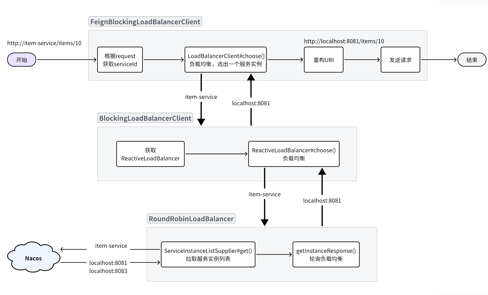
更换负载均衡算法¶
SpringCloud默认采用的负载均衡策略是RoundRobinLoadBalancer(即轮询算法)
Spring-Cloud-Loadbalancer模块中有一个自动配置类LoadBalancerClientConfiguration，其中定义了默认的负载均衡器：
@Bean
@ConditionalOnMissingBean //Bean不存在才创建该Bean
public ReactorLoadBalancer<ServiceInstance> reactorServiceInstanceLoadBalancer(Environment environment, LoadBalancerClientFactory loadBalancerClientFactory) {
String name = environment.getProperty("loadbalancer.client.name");
return new RoundRobinLoadBalancer(loadBalancerClientFactory.getLazyProvider(name, ServiceInstanceListSupplier.class), name);
}
自定义了这个类型的bean，则负载均衡的策略就会被改变
public class OpenFeignConfig {
@Bean
public ReactorLoadBalancer<ServiceInstance> reactorServiceInstanceLoadBalancer(
Environment environment, NacosDiscoveryProperties properties,
LoadBalancerClientFactory loadBalancerClientFactory) {
String name = environment.getProperty(LoadBalancerClientFactory.PROPERTY_NAME);
return new NacosLoadBalancer(
loadBalancerClientFactory.getLazyProvider(name, ServiceInstanceListSupplier.class), name, properties);
}
}
Warning
这个配置类不能加@Configuration注解，也不要被SpringBootApplication扫描到。
NacosLoadBalancer采用集群优先，以及加权算法，可以在Nacos中为服务实例配置不同的权重
由于这个OpenFeignConfig没有加@Configuration注解，也就没有被Spring加载，因此是不会生效的。接下来，我们要在启动类上通过注解来声明这个配置。
有两种做法：
- 全局配置：对所有服务生效
@LoadBalancerClients(defaultConfiguration = OpenFeignConfig.class)
- 局部配置：只对某个服务生效
@LoadBalancerClients({
@LoadBalancerClient(value = "item-service", configuration = OpenFeignConfig.class)
})
服务保护¶
线程隔离¶
无论是Hystix还是Sentinel都支持线程隔离。不过其实现方式不同。
线程隔离有两种方式实现：
- 线程池隔离：给每个服务调用业务分配一个线程池，利用线程池本身实现隔离效果
- 支持主动超时和异步调用
- 线程池额外开销较大
- 适用于低频调用的场景
- 信号量隔离：不创建线程池，而是计数器模式，记录业务使用的线程数量，达到信号量上限时，禁止新的请求
- 轻量级，无额外开销
- 不支持主动超时与异步调用
- 适用于高频调用的场景
滑动窗口计数法¶
在熔断功能中，需要统计异常请求或慢请求比例，也就是计数。在限流的时候，要统计每秒钟的QPS，同样是计数。可见计数算法在熔断限流中的应用非常多。sentinel中采用的计数器算法就是滑动窗口计数算法。
固定窗口计数算法
基本原理如图：
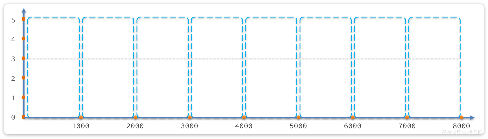
说明：
- 将时间划分为多个窗口，窗口时间跨度称为
Interval，本例中为1000ms； - 每个窗口维护1个计数器，每有1次请求就将计数器
+1。限流就是设置计数器阈值，本例为3，图中红线标记 - 如果计数器超过了限流阈值，则超出阈值的请求都被丢弃。
存在的问题：
如果第5秒的三次请求都是在4.5~5秒之间到达；第6秒的请求是在5~5.5之间到达。那么从第4.5~5.之间就有6次请求！也就是说每秒的QPS达到了6，远超阈值。
这就是固定窗口计数算法的问题，它只能统计当前某1个时间窗的请求数量是否到达阈值，无法结合前后的时间窗的数据做综合统计。
滑动窗口计数法
固定时间窗口算法中窗口有很多，其跨度和位置是与时间区间绑定，因此是很多固定不动的窗口。而滑动时间窗口算法中只包含1个固定跨度的窗口，但窗口是可移动动的，与时间区间无关。
具体规则如下：
- 窗口时间跨度
Interval大小固定，例如1秒 - 时间区间跨度为
Interval / n，例如n=2，则时间区间跨度为500ms - 窗口会随着当前请求所在时间
currentTime移动，窗口范围从currentTime-Interval时刻之后的第一个时区开始，到currentTime所在时区结束。
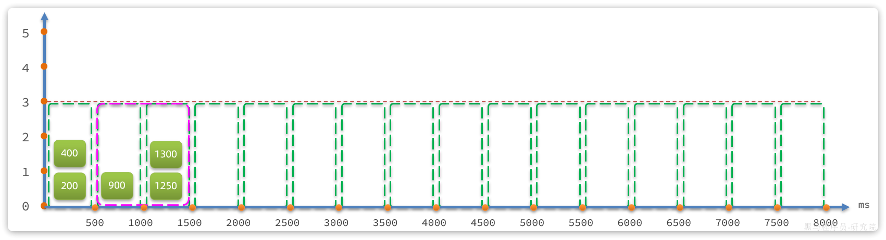
滑动窗口内划分的时区越多，这种统计就越准确。
令牌桶算法¶
限流的另一种常见算法是令牌桶算法。Sentinel中的热点参数限流正是基于令牌桶算法实现的。其基本思路如图：
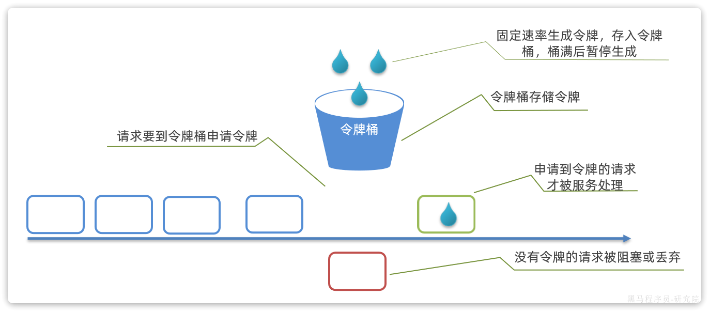
说明：
- 以固定的速率生成令牌，存入令牌桶中，如果令牌桶满了以后，多余令牌丢弃
- 请求进入后，必须先尝试从桶中获取令牌，获取到令牌后才可以被处理
- 如果令牌桶中没有令牌，则请求等待或丢弃
存在的问题：
- 某一秒令牌桶中产生了很多令牌，达到令牌桶上限N，缓存在令牌桶中，但是这一秒没有请求进入。
- 下一秒的前半秒涌入了超过2N个请求，之前缓存的令牌桶的令牌耗尽，同时这一秒又生成了N个令牌，于是总共放行了2N个请求。超出了我们设定的QPS阈值。
因此，在使用令牌桶算法时，尽量不要将令牌上限设定到服务能承受的QPS上限。而是预留一定的波动空间，这样我们才能应对突发流量。
漏桶算法¶
漏桶算法与令牌桶相似，但在设计上更适合应对并发波动较大的场景，以解决令牌桶中的问题。
简单来说就是请求到达后不是直接处理，而是先放入一个队列。而后以固定的速率从队列中取出并处理请求。
说明：
- 将每个请求视作"水滴"放入"漏桶"进行存储；
- "漏桶"以固定速率向外"漏"出请求来执行，如果"漏桶"空了则停止"漏水”；
- 如果"漏桶"满了则多余的"水滴"会被直接丢弃。
漏桶的优势就是流量整型，桶就像是一个大坝，请求就是水。并发量不断波动，就如图水流时大时小，但都会被大坝拦住。而后大坝按照固定的速度放水，避免下游被洪水淹没。
因此，不管并发量如何波动，经过漏桶处理后的请求一定是相对平滑的曲线：
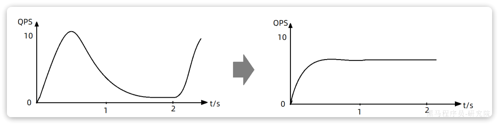
sentinel中的限流中的排队等待功能正是基于漏桶算法实现的。
- 完